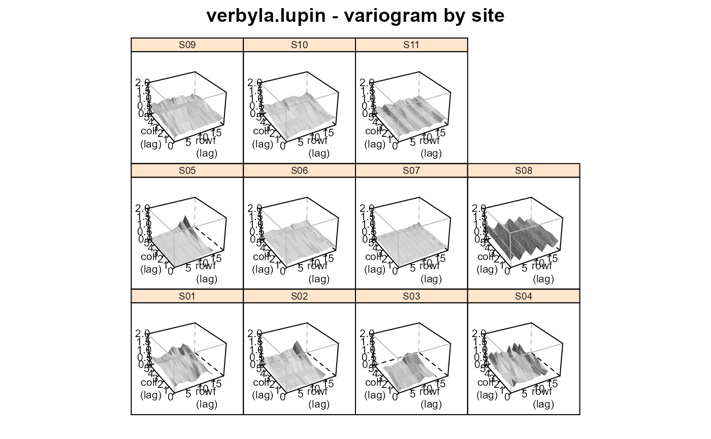
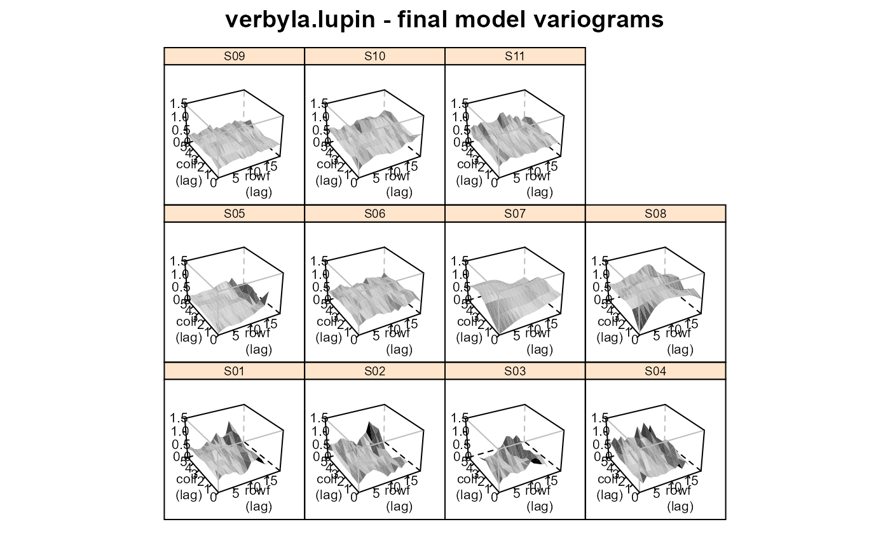

Multi-environment trial of lupin, multiple varieties and densities
verbyla.lupin.RdYield of 9 varieties of lupin at different planting densities across 2 years and multiple locations.
Format
gengenotype, 9 varieties
sitesite, 11 levels
reprep, 2-3 levels
rateseeding rate in plants/m^2
rowrow
colcolumn
serpfactor of 4 levels for serpentine seeding effect
linrowcentered row position as a numeric variate (row-8.5)/10
lincolcentered column position as a numeric variate (col-3.5)
linratelinear effect of seedrate, scaled (seedrate-41.92958)/10
yieldyield in tons/hectare
yearyear, 1991-1992
loclocation
Details
Nine varieties of lupin were tested for yield response to plant density at 11 sites. The target density in 1991 was 10, 20, ..., 60 plants per m^2, and in 1992 was 20, 30, ..., 70 plants per m^2.
Plot dimensions are not given.
The variety Myallie was grown only in 1992.
Each site had 2 reps in 1991 and 3 reps in 1992. Each rep was laid out as a factorial RCB design; one randomization was used for all sites in 1991 and one (different) randomization was used for all sites in 1992. (This was confirmed with the principal investigator.)
In 1991 at the Mt. Barker location, the data for columns 5 and 6 was discarded due to problems with weeds.
Variety 'Myallie' was called '84L:439' in Verbyla 1997.
The year of release for the varieties is
| Unicrop | 1973 |
| Illyarrie | 1979 |
| Yandee | 1980 |
| Danja | 1986 |
| Gungurru | 1988 |
| Yorrel | 1989 |
| Warrah | 1989 |
| Merrit | 1991 |
| Myallie | 1995 |
Data retrieved Oct 2010 from https://www.blackwellpublishers.co.uk/rss. (No longer available).
Used with permission of Blackwell Publishing.
Source
Arunas P. Verbyla and Brian R. Cullis and Michael G. Kenward and Sue J. Welham, (1999). The analysis of designed experiments and longitudinal data by using smoothing splines. Appl. Statist., 48, 269--311. https://doi.org/10.1111/1467-9876.00154
Arunas P. Verbyla and Brian R. Cullis and Michael G. Kenward and Sue J. Welham, (1997). The analysis of designed experiments and longitudinal data by using smoothing splines. University of Adelaide, Department of Statistics, Research Report 97/4. https://https://citeseerx.ist.psu.edu/viewdoc/summary?doi=10.1.1.56.808
Examples
# \dontrun{ library(agridat) data(verbyla.lupin) dat <- verbyla.lupin # The same RCB randomization was used at all sites in each year libs(desplot) desplot(dat, gen~col+row|site, out1=rep, num=rate, # aspect unknown main="verbyla.lupin - experiment design")# Figure 3 of Verbyla libs(lattice) foo <- xyplot(yield ~ rate|loc*gen, data=dat, subset=year==92, type=c('p','smooth'), cex=.5, main="verbyla.lupin: 1992 yield response curves", xlab="Seed rate (plants/m^2)", ylab="Yield (tons/ha)", strip=strip.custom(par.strip.text=list(cex=.7))) libs(latticeExtra) # for useOuterStrips useOuterStrips(foo, strip=strip.custom(par.strip.text=list(cex=.7)), strip.left=strip.custom(par.strip.text=list(cex=.7)))# ---------- libs(asreml,lucid) # asreml 4 # We try to reproduce the analysis of Verbyla 1999. # May not be exactly the same, but is pretty close. # Check nlevels for size of random-coefficient structures # length(with(dat, table(gen))) # 9 varieties for RC1 # length(with(dat, table(gen,site))) # 99 site:gen combinations for RC2 # Make row and col into factors dat <- transform(dat, colf=factor(col), rowf=factor(row)) # sort for asreml dat <- dat[order(dat$site, dat$rowf, dat$colf),] # Make site names more useful for plots # dat <- transform(dat, site=factor(paste0(year,".",substring(loc,1,4)))) # Initial model from top of Verbyla table 9. m0 <- asreml(yield ~ 1 + site + linrate + site:linrate, data = dat, random = ~ spl(rate) + dev(rate) + site:spl(rate) + site:dev(rate) + str(~gen+gen:linrate, ~us(2):id(9)) # RC1 + gen:spl(rate) + gen:dev(rate) + str(~site:gen+site:gen:linrate, ~us(2):id(99)) # RC2 + site:gen:spl(rate) + site:gen:dev(rate), residual = ~ dsum( ~ ar1(rowf):ar1(colf)|site) # Spatial AR1 x AR1 )#> Multi-section model using the sigma parameterization. #> ASReml 4.1.0 Fri Dec 11 17:50:41 2020 #> Spline: design points closer than 0.006 have been merged.#> Warning: US updates modified 2 times in iteration 1 to remain positive definite.#> LogLik Sigma2 DF wall cpu #> 1 1035.181 1.0 1370 17:50:41 0.5 (16 restrained) #> 2 1265.567 1.0 1370 17:50:42 0.4 (15 restrained)#> Warning: US updates modified 2 times in iteration 3 to remain positive definite.#> 3 1433.305 1.0 1370 17:50:42 0.3 (13 restrained)#> Warning: US updates modified 1 times in iteration 4 to remain positive definite.#> 4 1491.898 1.0 1370 17:50:42 0.3 (10 restrained) #> 5 1530.115 1.0 1370 17:50:43 0.3 (5 restrained) #> 6 1535.456 1.0 1370 17:50:43 0.3 (5 restrained) #> 7 1537.134 1.0 1370 17:50:43 0.3 (3 restrained) #> 8 1537.495 1.0 1370 17:50:44 0.3 (1 restrained) #> 9 1537.559 1.0 1370 17:50:44 0.3 #> 10 1537.563 1.0 1370 17:50:44 0.3#> Warning: US variance structures were modified in 5 instances to make them positive definite#> Warning: Some components changed by more than 1% on the last iteration.#> Multi-section model using the sigma parameterization. #> ASReml 4.1.0 Fri Dec 11 17:50:44 2020 #> Spline: design points closer than 0.006 have been merged. #> LogLik Sigma2 DF wall cpu #> 1 1537.564 1.0 1370 17:50:45 0.4 #> 2 1537.564 1.0 1370 17:50:45 0.3#> Warning: Some components changed by more than 1% on the last iteration.#> Multi-section model using the sigma parameterization. #> ASReml 4.1.0 Fri Dec 11 17:50:45 2020 #> Spline: design points closer than 0.006 have been merged. #> LogLik Sigma2 DF wall cpu #> 1 1537.564 1.0 1370 17:50:46 0.4 #> 2 1537.564 1.0 1370 17:50:46 0.3#> Warning: Some components changed by more than 1% on the last iteration.#> Multi-section model using the sigma parameterization. #> ASReml 4.1.0 Fri Dec 11 17:50:46 2020 #> Spline: design points closer than 0.006 have been merged. #> LogLik Sigma2 DF wall cpu #> 1 1537.564 1.0 1370 17:50:47 0.4 #> 2 1537.564 1.0 1370 17:50:47 0.3#> Warning: Some components changed by more than 1% on the last iteration.#> Multi-section model using the sigma parameterization. #> ASReml 4.1.0 Fri Dec 11 17:50:47 2020 #> Spline: design points closer than 0.006 have been merged. #> LogLik Sigma2 DF wall cpu #> 1 1537.564 1.0 1370 17:50:47 0.4 #> 2 1537.564 1.0 1370 17:50:48 0.3#> Warning: Some components changed by more than 1% on the last iteration.#> Multi-section model using the sigma parameterization. #> ASReml 4.1.0 Fri Dec 11 17:50:48 2020 #> Spline: design points closer than 0.006 have been merged. #> LogLik Sigma2 DF wall cpu #> 1 1537.564 1.0 1370 17:50:48 0.4 #> 2 1537.564 1.0 1370 17:50:49 0.3# Variograms match Verbyla 1999 figure 7 (scale slightly different) plot(varioGram(m0), xlim=c(1:19), zlim=c(0,2), main="verbyla.lupin - variogram by site")# Sequence of models in Verbyla 1999 table 10 m1 <- update(m0, fixed= ~ . + at(site, c(2,5,6,8,9,10)):lincol + at(site, c(3,5,7,8)):linrow + at(site, c(2,3,5,7,8,9,11)):serp , random = ~ . + at(site, c(3,6,7,9)):rowf + at(site, c(1,2,3,9,10)):colf + at(site, c(5,7,8,10)):units)#> Multi-section model using the sigma parameterization. #> ASReml 4.1.0 Fri Dec 11 17:50:49 2020 #> Spline: design points closer than 0.006 have been merged.#> Warning: US updates modified 1 times in iteration 1 to remain positive definite.#> LogLik Sigma2 DF wall cpu #> 1 1300.766 1.0 1339 17:50:50 0.8 (15 restrained) #> 2 1373.661 1.0 1339 17:50:51 0.6 (11 restrained)#> Warning: US updates modified 1 times in iteration 3 to remain positive definite.#> 3 1521.164 1.0 1339 17:50:51 0.6 (12 restrained)#> Warning: US updates modified 1 times in iteration 4 to remain positive definite.#> 4 1550.613 1.0 1339 17:50:52 0.7 (7 restrained) #> 5 1571.582 1.0 1339 17:50:53 0.7 (3 restrained) #> 6 1578.652 1.0 1339 17:50:53 0.6 (2 restrained) #> 7 1582.262 1.0 1339 17:50:54 0.6 (1 restrained) #> 8 1582.866 1.0 1339 17:50:54 0.6 #> 9 1582.912 1.0 1339 17:50:55 0.6 #> 10 1582.921 1.0 1339 17:50:56 0.6 #> 11 1582.925 1.0 1339 17:50:56 0.6 #> 12 1582.928 1.0 1339 17:50:57 0.6 #> 13 1582.930 1.0 1339 17:50:57 0.6#> Warning: US variance structures were modified in 3 instances to make them positive definite#> Warning: Log-likelihood not converged#> Warning: Some components changed by more than 1% on the last iteration.#> Multi-section model using the sigma parameterization. #> ASReml 4.1.0 Fri Dec 11 17:50:58 2020 #> Spline: design points closer than 0.006 have been merged. #> LogLik Sigma2 DF wall cpu #> 1 1582.932 1.0 1339 17:50:58 0.8 #> 2 1582.932 1.0 1339 17:50:59 0.6 #> 3 1582.933 1.0 1339 17:51:00 0.7 #> 4 1582.933 1.0 1339 17:51:00 0.7 #> 5 1582.934 1.0 1339 17:51:01 0.7 #> 6 1582.934 1.0 1339 17:51:02 0.7#> Warning: Some components changed by more than 1% on the last iteration.#> Multi-section model using the sigma parameterization. #> ASReml 4.1.0 Fri Dec 11 17:51:02 2020 #> Spline: design points closer than 0.006 have been merged. #> LogLik Sigma2 DF wall cpu #> 1 1582.935 1.0 1339 17:51:02 0.3 (1 restrained) #> 2 1582.935 1.0 1339 17:51:03 0.2 (1 restrained) #> 3 1582.935 1.0 1339 17:51:03 0.3#> Multi-section model using the sigma parameterization. #> ASReml 4.1.0 Fri Dec 11 17:51:03 2020 #> Spline: design points closer than 0.006 have been merged. #> LogLik Sigma2 DF wall cpu #> 1 1582.936 1.0 1339 17:51:03 0.2 (1 restrained) #> 2 1582.936 1.0 1339 17:51:03 0.1 (1 restrained) #> 3 1582.936 1.0 1339 17:51:03 0.1#> Multi-section model using the sigma parameterization. #> ASReml 4.1.0 Fri Dec 11 17:51:04 2020 #> Spline: design points closer than 0.006 have been merged. #> LogLik Sigma2 DF wall cpu #> 1 1582.936 1.0 1339 17:51:04 0.1 (1 restrained) #> 2 1582.936 1.0 1339 17:51:04 0.1 (1 restrained) #> 3 1582.936 1.0 1339 17:51:04 0.1#> Multi-section model using the sigma parameterization. #> ASReml 4.1.0 Fri Dec 11 17:51:04 2020 #> Spline: design points closer than 0.006 have been merged. #> LogLik Sigma2 DF wall cpu #> 1 1582.936 1.0 1339 17:51:04 0.1 #> 2 1582.936 1.0 1339 17:51:04 0.1#> effect component std.error z.ratio bound %ch #> spl(rate) 0.001288 0.001019 1.3 P 0 #> spl(rate):site 0.0001556 0.0001227 1.3 P 0 #> gen+gen:linrate!us(2)_1:1 0.005445 0.003733 1.5 P 0 #> gen+gen:linrate!us(2)_2:1 0.001004 0.0007598 1.3 P 0 #> gen+gen:linrate!us(2)_2:2 0.0003661 0.0002168 1.7 P 0 #> spl(rate):gen 0.0002057 0.0001326 1.6 P 0 #> site:gen+site:gen:linrate!us(2)_1:1 0.01881 0.003402 5.5 P 0 #> site:gen+site:gen:linrate!us(2)_2:1 0.00175 0.0004706 3.7 P 0 #> site:gen+site:gen:linrate!us(2)_2:2 0.000167 0.00008968 1.9 P 0 #> at(site, S03):rowf 0.002594 0.006235 0.42 P 0 #> at(site, S06):rowf 0.001127 0.00226 0.5 P 0 #> at(site, S07):rowf 0.00019 0.002012 0.094 P 0.1 #> at(site, S09):rowf 0.004526 0.002323 1.9 P 0 #> at(site, S01):colf 0.01041 0.00854 1.2 P 0 #> at(site, S02):colf 0.02498 0.02076 1.2 P 0 #> at(site, S03):colf 0.08167 0.07359 1.1 P 0 #> at(site, S09):colf 0.004083 0.003688 1.1 P 0 #> at(site, S10):colf 0.0004588 0.001058 0.43 P 0.2 #> at(site, S05):units 0.004378 0.007786 0.56 P 0 #> at(site, S07):units 0.01323 0.002712 4.9 P 0 #> at(site, S08):units 0.01302 0.004202 3.1 P 0 #> site_S01!R 0.03273 0.005654 5.8 P 0 #> site_S01!rowf!cor 0.1852 0.1417 1.3 U 0 #> site_S01!colf!cor 0.1407 0.121 1.2 U 0 #> site_S02!R 0.03999 0.00753 5.3 P 0 #> site_S02!rowf!cor 0.3103 0.135 2.3 U 0 #> site_S02!colf!cor 0.1673 0.1369 1.2 U 0 #> site_S03!R 0.0505 0.0157 3.2 P 0 #> site_S03!rowf!cor 0.4707 0.179 2.6 U 0 #> site_S03!colf!cor -0.01851 0.2423 -0.076 U 0 #> site_S04!R 0.03301 0.005216 6.3 P 0 #> site_S04!rowf!cor -0.04041 0.1159 -0.35 U 0 #> site_S04!colf!cor 0.1109 0.1261 0.88 U 0 #> site_S05!R 0.01772 0.008592 2.1 P 0 #> site_S05!rowf!cor 0.5623 0.2644 2.1 U 0 #> site_S05!colf!cor 0.08337 0.2043 0.41 U 0 #> site_S06!R 0.02409 0.003996 6 P 0 #> site_S06!rowf!cor 0.3216 0.08428 3.8 U 0 #> site_S06!colf!cor 0.2214 0.1186 1.9 U 0 #> site_S07!R 0.03658 0.02023 1.8 P 0 #> site_S07!rowf!cor 0.9019 0.06323 14 U 0 #> site_S07!colf!cor 0.5703 0.2383 2.4 U 0 #> site_S08!R 0.01813 0.006293 2.9 P 0 #> site_S08!rowf!cor 0.7429 0.1436 5.2 U 0 #> site_S08!colf!cor 0.1768 0.2027 0.87 U 0 #> site_S09!R 0.01725 0.002548 6.8 P 0 #> site_S09!rowf!cor 0.2509 0.09548 2.6 U 0 #> site_S09!colf!cor -0.03375 0.1213 -0.28 U 0 #> site_S10!R 0.01035 0.001703 6.1 P 0 #> site_S10!rowf!cor 0.5222 0.07746 6.7 U 0.1 #> site_S10!colf!cor 0.1709 0.09266 1.8 U 0 #> site_S11!R 0.05398 0.006905 7.8 P 0 #> site_S11!rowf!cor 0.1939 0.09649 2 U 0 #> site_S11!colf!cor 0.1034 0.1002 1 U 0#> [1] 0.7109445#> [1] 0.9873825# Matches Verbyla 1999 figure 5 plot(varioGram(m5), main="verbyla.lupin - final model variograms", xlim=c(1:19), zlim=c(0,1.5))# }